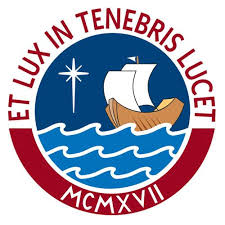

PONTIFICIA UNIVERSIDAD CATÓLICA DEL PERÚ
Ingeniería Mecatrónica
1IEE29
Fundamentos y Aplicaciones de Electrónica
Unidad 1: El Diodo de Unión PN
Unidad 2: Transistores Bipolares
Unidad 3: Amplificadores de Una Etapa en Pequeña Señal con Transistores Bipolares Modelados con Parámetros Híbridos
Unidad 4: Transistor JFET
Unidad 5: Transistor MOSFET
Unidad 6: Respuesta en Frecuencia de un Amplificador
Unidad 7: Amplificador Operacional
Unidad 8: Rectificadores Controlables
Unidad 9: Convertidores Digital-Analógico y Analógico-Digital